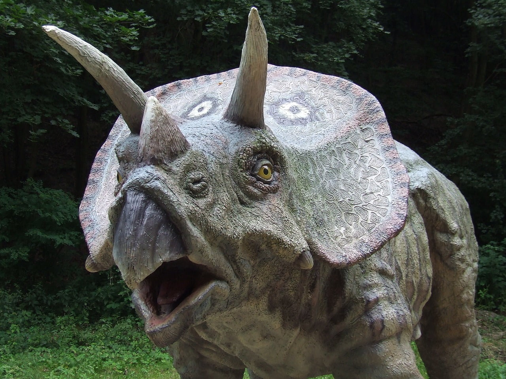

O Enigma do Escritório Silencioso
Dizem que o misterioso Gemir passava horas em salas vazias após o expediente. Uma noite, encontrou um
antigo arquivo escondido atrás de um armário, com documentos esquecidos há décadas. Desde então,
ninguém sabe ao certo o que ele descobriu — apenas que passou a agir como se guardasse um grande
segredo.

A Viagem que Ninguém Viu
Certa vez, Gemir desapareceu por alguns dias sem avisar. Quando voltou, trouxe apenas um caderno
cheio de anotações e mapas estranhos. Nunca explicou para onde foi, mas quem viu os desenhos diz que
parecem mostrar lugares que não existem em nenhum mapa comum.
O Visitante da Madrugada
Alguns colegas juram que Gemir recebia visitas tarde da noite. Sempre a mesma figura, sempre no mesmo
horário. As conversas eram baixas e rápidas. No dia seguinte, Gemir mantinha sua rotina como se nada
tivesse acontecido, deixando apenas mistério no ar.
O Guardião do Tempo
Dizem que o misterioso Gemir já caminhava pela Terra quando os grandes impérios ainda nasciam.
Testemunhou reinos caírem e cidades surgirem do nada. Sempre em silêncio, aparecia apenas para
orientar aqueles que estavam perdidos, desaparecendo antes que alguém pudesse entender quem
realmente era.
A Chave Esquecida
Em tempos antigos, Gemir guardava uma chave que abriria um conhecimento proibido. Muitos tentaram
roubá-la, mas nunca conseguiram encontrá-lo. Dizem que ele se escondia entre as pessoas comuns,
esperando o momento certo para revelar o segredo — um momento que nunca chegou.
O Caminhante das Eras
Relatos antigos falam de alguém que nunca envelhecia, sempre com a mesma aparência ao longo dos
séculos. Esse era Gemir. Ele atravessou desertos, mares e montanhas, acumulando histórias que nenhum
livro poderia conter. Até hoje, há quem diga que ele ainda caminha entre nós, apenas observando.